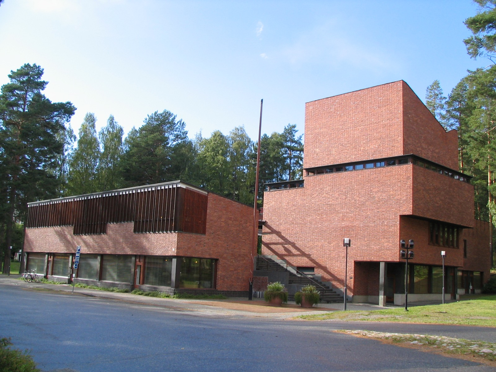

外から、形を見てみよう。
セイナッツァロの町役場と図書館。高いれんがの部分と低い棟の間に、上へ進む階段が見えます。2007年の外観です。
作品・制作の例4件を紹介しています。実作品画像1点、参照・関連画像0点。画像の収集は継続中です。
地域を横断するデザインの潮流・呼称
Scandinavian Modern
木を曲げた椅子。
体を包む椅子。
人が集まる町役場。
北欧モダンでは、暮らしや体に合う形を、材料とつくり方から考えます。
木だけを使う決まりではなく、プラスチックなど新しい材料も使いました。
実作品を見る

画像を表示できませんでした。下の出典ページで確認できます。
アルヴァ・アアルト（設計）／エルサ・マキニエミ（現場の主任建築家） / 1949–1952（設計・建設、アアルト財団の表記）
セイナッツァロの町役場と図書館。高いれんがの部分と低い棟の間に、上へ進む階段が見えます。2007年の外観です。
セイナッツァロの町役場 / Photo: Zache, CC BY 3.0.
出典で作品・資料を見る ↗CC BY 3.0
原建築と写真の権利は別です。この外観写真の掲載を、図面・内部・家具などの自由利用の許可とは扱いません。
写真：CC BY 3.0。出典・撮影者と画像の変更内容を表示して利用します。
縦横の比率を保って縮小しJPEGで保存。切り抜き・色の変更・描き足しはしていません。
建築外観の利用について、日本・米国などの個別の条件を確認しています。全法域で原建築がパブリックドメインという意味ではありません。
画像の利用条件 ↗家具
薄い木の板を重ねた合板（ごうはん）を曲げ、座る面をつくりました。金属の管を使う椅子とは違う方法で、軽やかな形としなやかさを探った例です。
作品・資料の出典を見る ↗作品名（出典表記）：Paimio lounge chair, model 41（パイミオ・チェア）
Alvar Aalto（アルヴァ・アアルト） / 1932 / 家具
家具
背もたれから肘掛けへ続く曲線と、木の継ぎ目が見どころです。ニューヨーク近代美術館所蔵品はオーク材と籐（とう）を使い、木を扱う職人の技を伝えます。
作品・資料の出典を見る ↗作品名（出典表記）：Armchair（アームチェア、通称ザ・チェア）
Hans Wegner（ハンス・ウェグナー）。製造Johannes Hansen（ヨハネス・ハンセン） / 1949 / 家具
家具
卵の殻のような背もたれが、座る人を包みます。ホテルのための設計で、革の表面の内側には成形したプラスチックなどが使われています。
作品・資料の出典を見る ↗作品名（出典表記）：Egg Armchair（エッグ・チェア）
Arne Jacobsen（アルネ・ヤコブセン）。製造Fritz Hansen（フリッツ・ハンセン） / 1958 / 家具
建築
役場、図書館、店、住まいを、一つの小さな町のようにまとめました。赤いれんがと、中庭へ上がる階段が、人の動きと場所のまとまりをつくります。
作品・資料の出典を見る ↗作品名（出典表記）：Säynätsalo Town Hall（セイナッツァロの町役場）
Alvar Aalto（アルヴァ・アアルト）。現場の主任建築家はElsa Mäkiniemi（エルサ・マキニエミ）（後のElissa Aalto（エリッサ・アアルト）） / 1949–1952（設計・建設、アアルト財団の表記） / 建築
北欧のデザインは、職人の仕事と工場の技術を組み合わせて発展しました。
1950年代には展示会や宣伝を通して世界へ広がります。
ただし「北欧らしさ」は、自然から勝手に生まれた一つの形ではありません。
国やつくり手の違いがあり、米国などとの交流もありました。
フィンランドを含む広い「北欧」の意味で、この名前が使われることがあります。
木やれんがの色と、革や塗装の色を分けて見ましょう。白と木目だけに決まっているわけではありません。
家具の名前や宣伝の文字だけで分類はできません。この項目では、書体よりも材料と使い方を中心に見ます。
《パイミオ・チェア》の曲げた板と、《エッグ・チェア》の体を包む形を比べましょう。似た丸みでも、材料と組み立て方は違います。
椅子では体を支える部分と脚、町役場では階段・中庭・部屋の位置を見ます。使う人の動きが、形とどうつながるでしょう。
ミッドセンチュリー・モダンと年代や作品が重なります。北欧モダンは地域のつながりに注目する名前、ミッドセンチュリー・モダンは20世紀半ばの広いデザインを扱う名前です。二つを対立する流行とは考えません。
いまの家具を見るときも、見た目の温かさだけでなく、体をどう支えるか、材料をどうつなぐかを確かめましょう。長く使えるかを考える入口にもなります。
北欧全体を4件で代表させません。フィンランド・デンマークの家具と建築に絞った入口です。
作品・制作の例4件を紹介しています。実作品画像1点、参照・関連画像0点。画像の収集は継続中です。